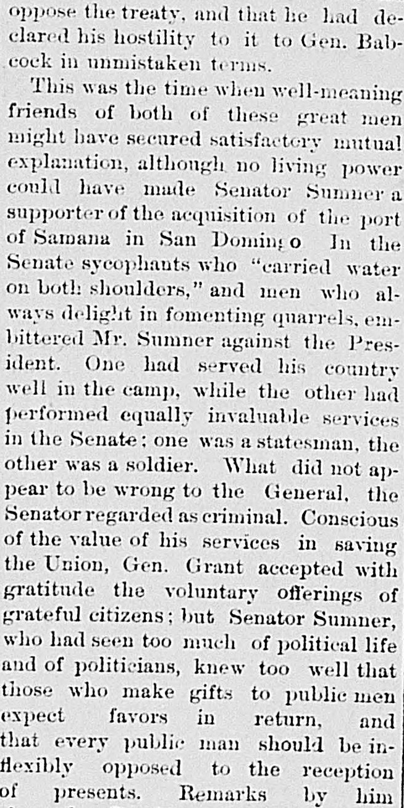
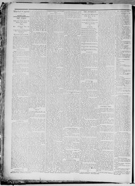

Reminiscences of Public Men.Reminiscencias de hombres públicos.
The Mitchell Capital. Mitchell, Dakota [S.D.], March 26, 1886. Page 2. View the originalVer el original


See the full pageVer la página completaThe newspaper reported that President Grant visited Senator Sumner at his dinner table to discuss San Domingo, noting that the President lacked the treaty or a memorandum but dwelt upon Gen. Babcock's expenditures of a secret service fund. According to the excerpt, President Grant expressed concern about potential congressional attacks regarding how much of that money—originally secured by Mr. Seward and Thad. Stevens during the war—had been spent.El periódico dio cuenta de que el presidente Grant acudió a la mesa del senador Sumner para conferenciar acerca de Santo Domingo, advirtiendo que el mandatario no llevaba consigo el texto del tratado ni minuta alguna, sino que se explayó en los desembolsos de fondos reservados ejecutados por el general Babcock. A tenor de la relación, Grant manifestó su inquietud ante eventuales interpelaciones en el Capitolio sobre el destino dado a dichos caudales, asignados originariamente por los señores Seward y Thaddeus Stevens durante la contienda civil.
FULL TEXT:TEXTO COMPLETO:
oppose the treaty, and that he had declared his hostility to it to Gen. Babcock in unmistaken terms.oponerse al tratado, y que había declarado su hostilidad hacia él al general Babcock en términos inequívocos.
This was the time when well-meaning friends of both of these great men might have secured satisfactory mutual explanation, although no living power could have made Senator Sumner a supporter of the acquisition of the port of Samana in San Domingo. In the Senate sycophants who "carried water on both shoulders," and men who always delight in fomenting quarrels, embittered Mr. Sumner against the President. One had served his country well in the camp, while the other had performed equally invaluable services in the Senate; one was a statesman, the other was a soldier. What did not appear to be wrong to the General, the Senator regarded as criminal. Conscious of the value of his services in saving the Union, Gen. Grant accepted with gratitude the voluntary offerings of grateful citizens; but Senator Sumner, who had seen too much of political life and of politicians, knew too well that those who make gifts to public men expect favors in return, and that every public man should be inflexibly opposed to the reception of presents.Este era el momento en que amigos bien intencionados de ambos grandes hombres podrían haber asegurado una explicación mutua satisfactoria, aunque ningún poder viviente podría haber hecho al Senador Sumner un partidario de la adquisición del puerto de Samaná en Santo Domingo. En el Senado aduladores que «cargaban agua en ambos hombros», y hombres que siempre se deleitan en fomentar disputas, amargaron al Sr. Sumner contra el Presidente. Uno había servido bien a su país en el campamento, mientras el otro había rendido servicios igualmente invaluables en el Senado; uno era un estadista, el otro era un soldado. Lo que no parecía estar mal al General, el Senador lo consideraba criminal. Consciente del valor de sus servicios en salvar la Unión, el general Grant aceptaba con gratitud las ofrendas voluntarias de ciudadanos agradecidos; pero el Senador Sumner, quien había visto demasiado de la vida política y de los políticos, sabía demasiado bien que quienes hacen regalos a hombres públicos esperan favores a cambio, y que todo hombre público debería oponerse inflexiblemente a la recepción de presentes.